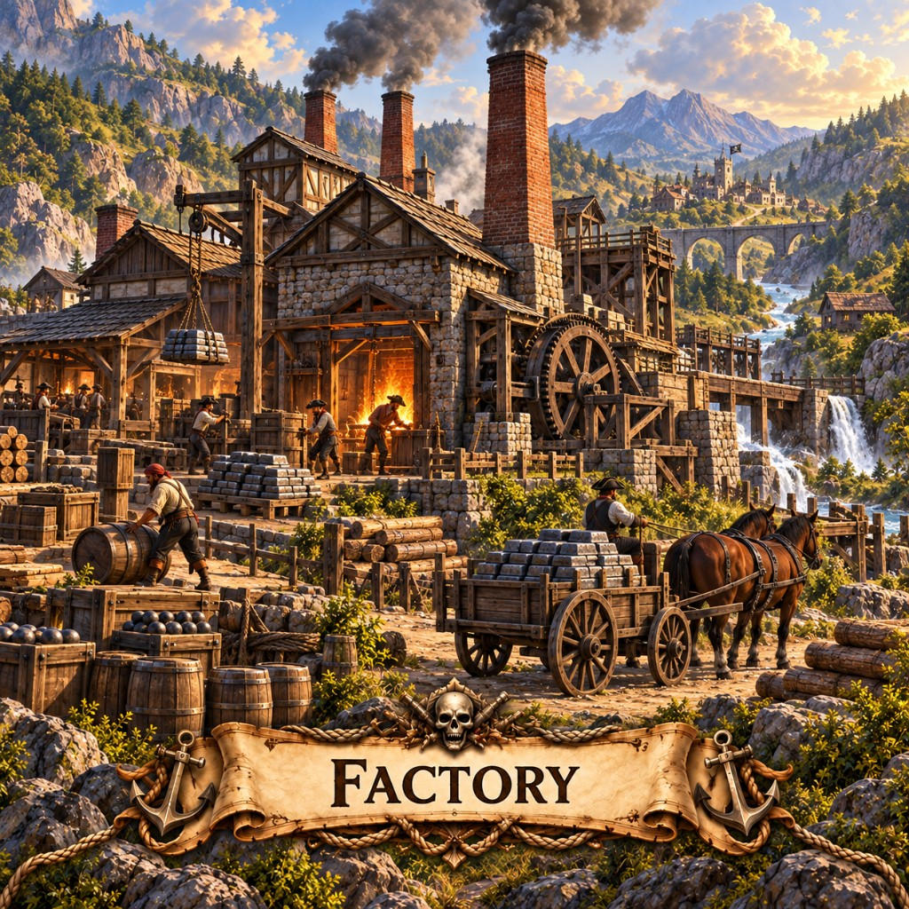

Factories in Marauder's Sea lay railroads to cities and ports. Trains, gold, and how they share cost with ports.

When pirates stay long enough, they stop pretending they are only sailors. Factories are the clank behind the flag — rails, bars, and a wheel in the river.
Auto-builds railroads to nearby Cities, Ports, and other Factories (and can link allies). Trains pay gold per visit, more for neighbors' buildings. Ships can damage them. Cost shares scaling with Ports.
Back to the building list or pick a map like X Marks the Spot and play this mobile strategy game in the browser.